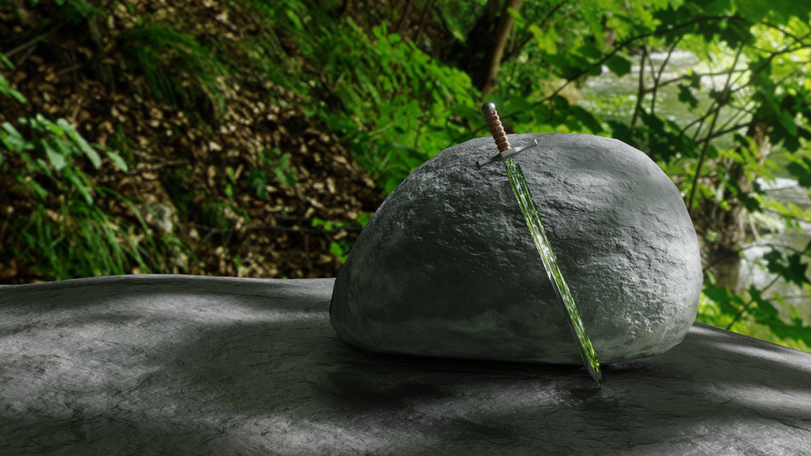
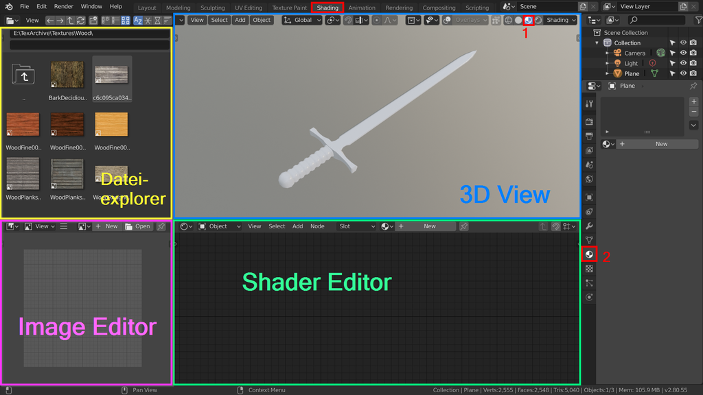
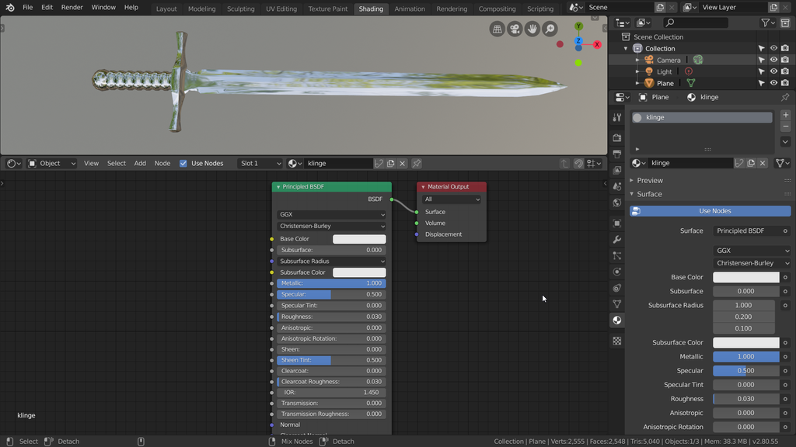
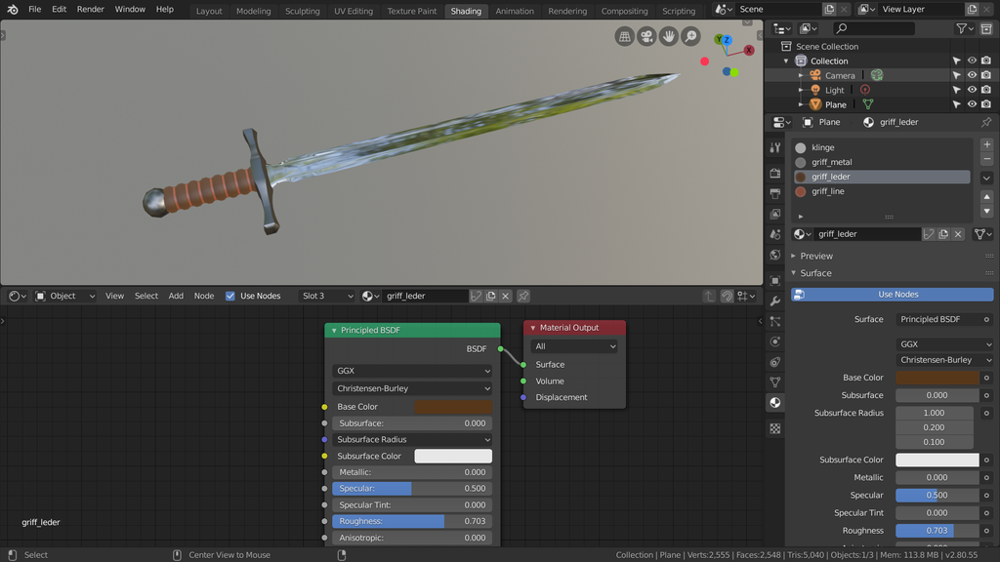
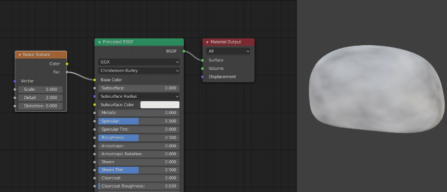
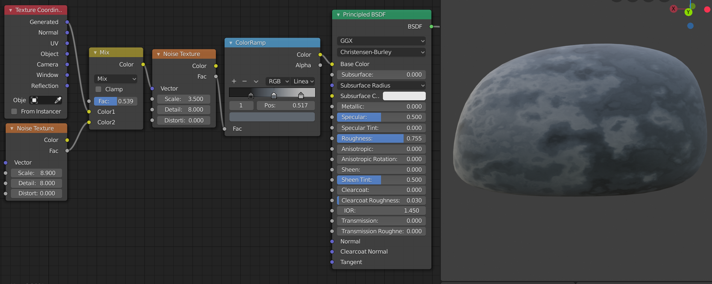
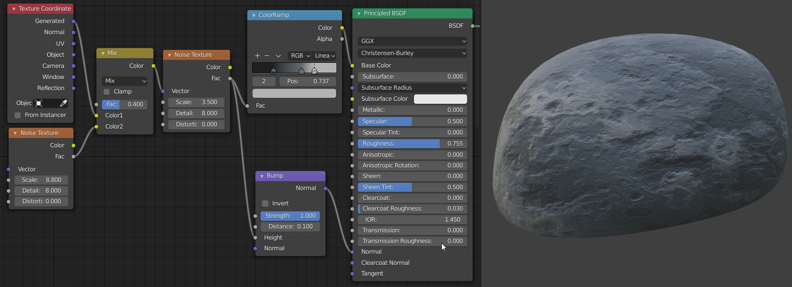

Übung 4.1 - Shading
In der folgenden Übung werden wir unserem Schwert Materialien geben und zum Rendern in Szene setzen. Das Schild wird in Übung 5 dazukommen.

1. Vorbereitung
- Öffnet das in Übung 2 modellierte Schwert. Alternativ kann auch dieses Modell verwendet werden.
- Wechselt in den Shading Workspace

Nun haben sich einige neue Bereiche geöffnet:
- unten seht ihr nun den Shader Editor. Hier wird immer das Material des markierten Objekts angezeigt.
- links daneben der bereits bekannte Image Editor hier können Texturen angesehen und bearbeitet werden.
- oben links ist der Dateiexplorer zu finden. Per Drag & Drop können z.b. Bilddateien in den Image Editor oder als Textur in den Shader Editor gesetzt werden.
- Rechts hat sich im bereits bekannten Properties Editor der World-Tab geöffnet. Hier kann der Hintergrund der Szene eingefärbt werden.
- Der 3D Viewport ist nun in der Lookdev Ansicht [1]. Diese Ansicht erlaubt es, Objekte in einigen Voreingestellten Lichtsituationen darzustellen und die Materialien richtig anzuzeigen. Im Shading Menü oben rechts finden sich die Optionen dazu.
-
wechselt im Propertier Editor vorerst zum Material Tab [2]
-
Selektiert das Schwert
2. Klinge
Als erstes wird das Metall für die Klinge des Schwertes erstellt. Zu dem im Shader Editor bereits vorhandenen Principled BSDF Node findet ihr hier detailierte Infos.

- stellt den Metallic Wert auf 1.0
Generell sind die meisten Materialien entweder Nichtleiter (metallic = 0.0) oder Metalle (metallic = 1.0). Daher ergibt es nur für Ausnahmefällen (z.b. bestimmte Arten von Autolack) Sinn, Werte dazwischen zu verwenden.
- stellt den Roughness Wert auf ca. 0.03 (perfekt glatte Materialen gibt es kaum)
3. Griff
3.1 Mehrere Materialien pro Objekt

Folgenderweise werden einem einzelnen Objekt mehrere Materialien zugewiesen
-
Wechselt in den Editmode (schaltet dafür zudem Overlays im 3D View wieder an)
-
markiert den Teil des Meshes, der das neue Material bekommen soll
-
Erstellt ein neues Material (z.b. für den Griff). Klickt dafür im Material Editor rechts auf
+um einen neuen Materialslot hinzuzufügen und dann darunter aufNewum dem Slot ein neues Material zuzuweisen. -
Klickt im Material Editor auf
Assign
3.2 Griff Materialien
- Nutzt die Parameter der zugewiesenen Materialien, um zusätzlich Materialien für den Griff zu erstellen.

4. Stein
- Nutzt die Techniken aus Übung 3, um um mit Box-Modelling schnell einen einfachen Stein zu modellieren (ohne Sculpting).

- Gebt dem Stein ein neues Material.
- Da Stein unpoliert recht rau ist, stellt Roughness auf einen recht hohen Wert, z.b. 0.8
Für die Textur wollen wir prozedurale Texturen verwenden. So werden Texturen genannt, die nicht in einer Bilddatei gespeichert sind, sondern beim Rendern generiert werden. Die wohl bekannteste prozedurale Textur ist das sogen. Perlin Noise, das von Ken Perlin für den Film Tron entwickelt wurde. Ähnlich funktioniert auch Blenders Noise Texture Node.
- Fügt im Node-Editor Texture → Noise Texture hinzu und verbindet den Fac Output der Textur mit dem Base Color Input des Principled BSDF Shaders.
- Da die Farben noch recht blass sind, nutzen wir einen Conveerter → ColorRamp Node, um die Textur einzufärben. Zieht diesen Node zwischen die Textur und den Principled Shader.

Der ColorRamp Node nimmt als Input Graustufen und gibt dann abhängig von der Helligkeit des Inputs die im Verlauf angegebenen Farben aus. Schwarz (links) nach Weiß (rechts).

- Fügt nun eine zweite Noise Texture hinzu und verischt diese mit einem MixRGB Node mit den Texturkoordinaten.
Die Texturkoordinaten werden in Blender auf die gleicheWeise behandelt wie Farben (X = Rot, Y = Grün, Z = Blau) und können dementsprechend auch mit Texturen vermischt werden. In diesem Beispiel ist das Ergebnis davon die Verzerrung der ersten Noise-Textur mithilfe der Zweiten. Damit lässt sich eine natürlicher wirkende Textur erzugen.
- Die Verzerrung kann nun mit dem Fac des Mix Nodes kontrolliert werden.
- Experimentiert solange mit den Scale Werten der beiden Texturen, bis ihr zufrieden mit dem Ergebnis seid. Stellt Detail beider Texturen vorerst ca. auf 8 (mehr Detail, detailliertes Ergebnis aber längere Renderzeit)

- Fügt einen Bump Node hinzu und verbindet dessen Height Wert mit dem Fac Output der Noise Textur und den Output mit dem Normal Input des Principled BSDF Nodes.
- Stellt den Distance Wert im Bump Node auf einen realistischeren Wert, z.b. 0.1
Bumpmapping manipuliert die Normalen des Materials abhängig der verwendeten Graustufentextur. Somit entsteht die Illusion einer Struktur auf der Oberfläche. Dabei werden mit dunklen Farben auf der Textur Rillen erzeugt und mit hellen Farben Erhebungen.
Ressourcen & Tutorials zum Thema
Einige Informationen zu Materialnodes finden sich in Lektion 4
Visuelle Repräsentation der Parameter der Principled BSDF Shadernodes:

| Art/Länge | Titel | Thema | Quelle |
|---|---|---|---|
| 7:14 | Shading Editor - Blender 2.80 Fundamentals | Materialien | YouTube - Blender (offizieller Kanal) |
| 9:00 | Blender 2.8 - The Node Editor | Materialien | YouTube - Rory Allen |
| 2:59 | Procedural Textures - Blender 2.80 Fundamentals | Materialien | YouTube - Blender (offizieller Kanal) |
| 15:04 | Blender 2.8 Beginner Tutorial - Part 9: Procedural Materials | Prozedurale Texturen | YouTube - CG Boost |
| Blender Reference Manual - Shader Nodes | Dokumentation zu jedem verfügbaren Shadernode | Blender Dokumentation |
Aufgabe
Gebt dem Schwert und Stein passende Materialen. Details zur Abgabe in 4.2